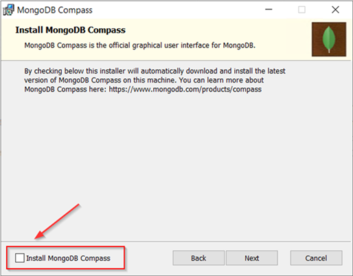
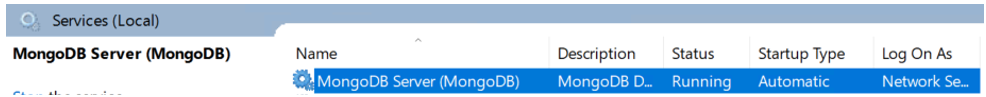
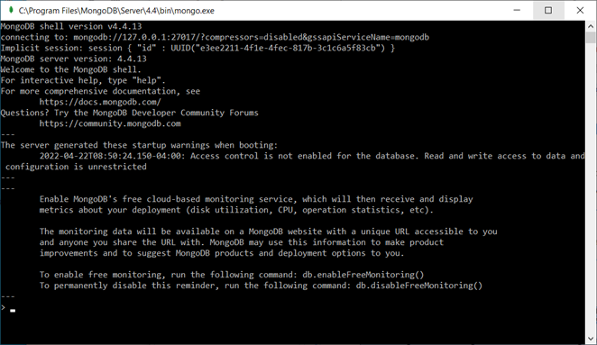

Installing MongoDB on Windows
MongoDB can be downloaded from the MongoDB website. This topic guides you through the steps for installing MongoDB on Windows.
About this task
For additonal information on installing MongoDB on Windows, refer to Install MongoDB Community Edition on Windows tutorial.
Note: In the following steps, MongoDB version 4.4 is used as an
example. If you are using a different version of MongoDB, refer to the MongoDB
documentation for how to issue commands for the version that you are using.
Procedure
-
Download the latest MongoDB version from the MongoDB download page.
Click this link to access the download page: Download MongoDB Community Server.
-
In the Available Download section, select the version to
download.
-
Navigate to the folder where MongoDB installation file was downloaded and
double click the msi file.
This starts the install process.
-
Follow the MongoDB Setup Wizard to complete the install.
Click Next to view the license agreement. To continue accept the license and click Next.
- On the Choose Setup Type window, click Complete.
-
On the Service Configuration window, specify the following
options and then click Next.
- Check Install MongoDB as a Service. It is required to run MongDB as a Windows service.
- Enable Run service as Network Service user.
- You can use the default values for Service,Data Directory, and Log Directory. If you modify these values, be sure to keep a note of the values. They are needed for the configuration steps.
-
Install MongoDB Compass is optional and not required for deploying HCL
Sametime. Clear the checkbox for Install MongoDB Compass
and click Next.

If MongoDB Compass is installed, it starts after after the install process completes. You can shutdown the MongoDB Compass application, as it is not used for HCL Sametime deployments. -
Click Install to complete the MongoDB
installation.
During the install process, you might be prompted about files that cannot be updated while the system is running. You can choose to continue and manually restart the computer later.After the install process completes, you must restart your computer.

- When athe install process is compete, click Finish.
-
After the system restart, MongoDB is running as a Windows service.

-
Verify that MongoDB installed successfully by opening the MongoDB Console. To
open the console, navigate to the MongoDB installation directory and locate the
bin directory. For example: C:\Program
Files\MongoDB\Server\4.4\bin. Start the mongo
application.
To close the console, type Exit on the command line.